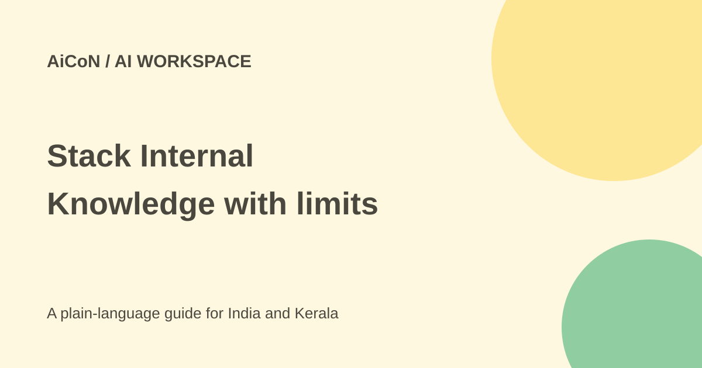

Stack Internal: free team knowledge with a credit cap
Stack Internal connects team knowledge with answers for people and AI tools. Its free Starter plan is limited to a small workspace and 1,000 monthly Flow Credits, not unlimited AI use.

What is Stack Internal?
Stack Overflow describes it as a shared knowledge platform. It can ingest connected content, deliver answers and show signals such as source provenance, recency, expertise, corroboration and human validation. Conflicting information can be flagged at response time.
The product also provides an MCP server for bringing knowledge into compatible tools such as Claude, Codex and Cursor. MCP is a connection method, not a guarantee that any connected AI always respects the right audience or gives a correct answer. Inspect the sources behind an important result.
What is free?
Current support documentation gives Starter 1,000 monthly Flow Credits, up to three workspace members, up to two scopes and up to three connector types. A connector type is not necessarily one account: Google and Slack are different types, and Stack Internal Community counts when enabled. Confirm the counting rules before planning several integrations.
The pricing page describes unlimited knowledge reads and ingestion, but its FAQ and billing documentation meter active retrieval and actions through Flow Credits. Do not read "unlimited reads" as unlimited metered AI requests. Importing through supported connectors does not consume Flow Credits under the current model.
How do Flow Credits work?
- A search, lookup or answer is an Access Flow, costing one credit.
- A knowledge update, revision, writeback or completed automated action is an Input Flow, costing three credits.
- Unused credits do not roll over.
- Starter is intended to refresh on a calendar-month cadence.
At 100% usage on Starter, metered requests and Input Flows are blocked and an upgrade message appears. The free allowance is therefore a real operating limit. An action that changes another connected system also needs permission; having credits does not establish that permission.
Paid plans and governance
Organization pricing is quote-based, with current credit bands starting at 15,000. Support describes annual commitments and sales-handled plan changes. Confirm the amount, credit band, renewal, cancellation and effective date in the order form instead of assuming a month-to-month subscription.
Organization includes single sign-on, custom granular roles and audit logs. Starter does not include those controls according to the billing guide. A free workspace may suit a small test, but a team handling confidential or regulated material should not assume it has the paid governance features.
How to try it responsibly
- Read the pricing and billing guide together, including members, scopes, connectors and credit limits.
- Create a small workspace using public or clearly shareable material first.
- Check who can see the workspace before connecting a private document source.
- Review connector permissions. The release says Slack and Google Docs connectors respect source permissions, but still verify the audience for important content.
- Ask a question with a known answer and inspect the returned evidence, dates and any conflict flag.
- Set a team review process for outdated or disputed knowledge and watch the monthly usage.
- Only then consider an AI-tool connection, checking read and write scope separately.
For Kerala teams and students
A small project team could collect approved technical notes and frequently asked questions. It should not begin by importing a college's confidential records or client files. Test mixed Malayalam-English terms and confirm that summaries preserve the original meaning.
A trust score is a useful signal, not proof. Old source material can be confidently wrong, and expert validation can have a limited scope. Keep the original document and its permissions visible in your review process.
What changed since the original post?
The archive post described a free workspace and three sources without detailed pricing. This guide clarifies three connector types, three members, two scopes, 1,000 monthly credits, exhaustion blocking and paid-only governance. It avoids treating the product name "verified knowledge" as a guarantee of truth.
Frequently asked questions
Is Starter unlimited?
No. Metered actions are capped by its monthly Flow Credits and other workspace limits.
Does every connector account use a separate slot?
The support guide counts connector types; check the exact integration plan.
Does free include custom roles and audit logs?
The billing guide reserves those controls for Organization.
Was a workspace created here?
No. This is a current source-based guide, not an account test.
Sources: Official pricing · Detailed plans and billing · Launch and trust features. Checked 7 October 2026.